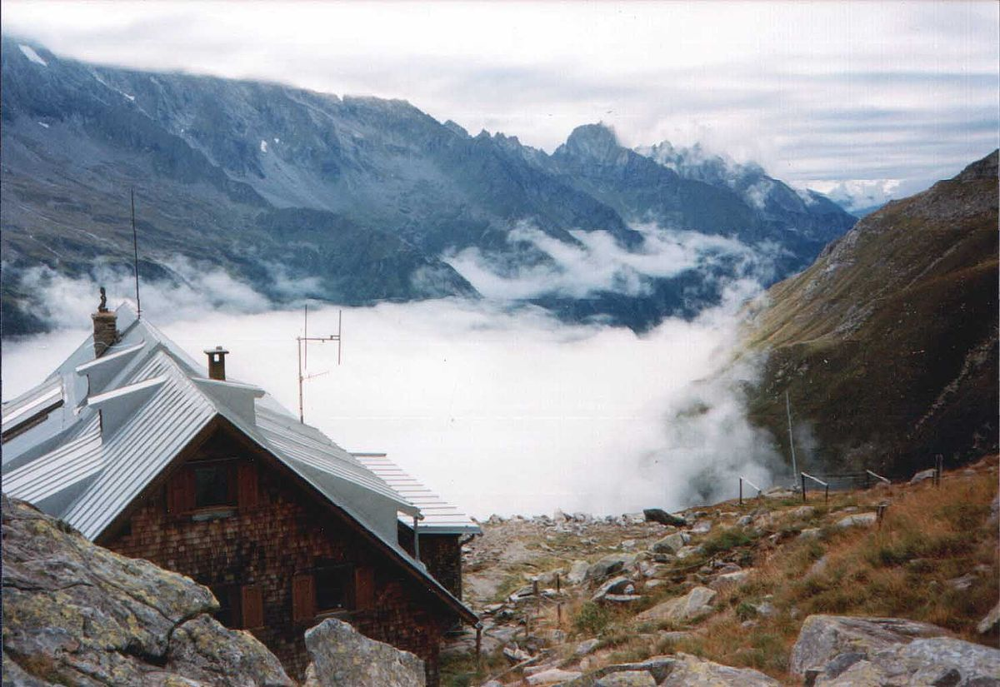
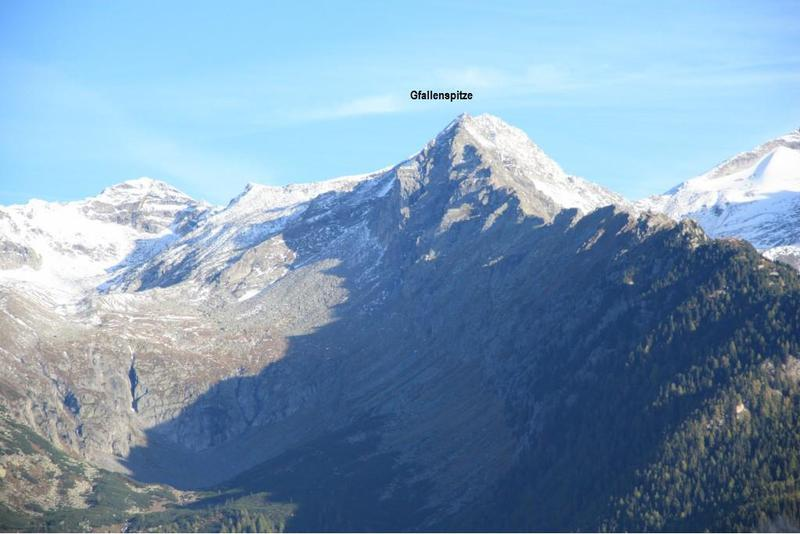
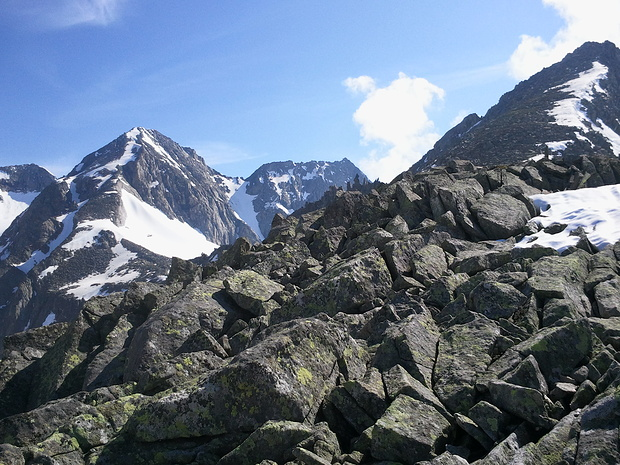

GfallenSpitze
Kasseler Hütte hike up to GfallenSpitze (maybe), back to Hut, then down to the road at Grüner Wand Hütte.
Wake up in Kasseler Hütte |
 |
|
Hike/climb up to GfallenSpitze |
 | |
The view from afar |
 | |
The Gfallenspitze |
 |
Hike details
9.9 km round trip
1084 m elev. gain (1.55 Greylock units).
Duration: 6h.30m.
Hike description
| English | Deutsch |
|---|---|
|
Gipfeltour von der Kasseler Hütte über das Keilbachjoch auf die Gfallenspitze (2946 m) und/oder die Grüne Wand Spitze (2966 m) und zurück. Die Gipfeltour startet von der Kasseler Hütte (2177 m) aus und führt zunächst kurz auf dem Alpinweg 502 in Richtung Lapenscharte /Greizer Hütte, dann mit Wegweiser links abzweigend, bergauf in das östliche Stilluppkees. Auf einer Geländestufe erreicht man das Kees mit der sogenannten Lake, einem je nach Wetterverhältnissen gut gefüllten Gletschersee. Seit dem Abzweig vom Weg 502 sind die Wegekennzeichen durchgehend in 2013 neu gezeichnet worden und führen bis hinauf zum Keilbachjoch (2833 m, Kreuz am Joch). Von dort aus ist es nur noch ein kurzes, wegloses Stück bis zum Gipfel der Gfallenspitze (2966 m). Von dort auf gleichem Wege zurück über das Keilbachjoch bis hinunter auf den Sattel zur Grünen Wand Spitze. Hinauf zur Grünen Wand Spitze ist es wieder weglos und man findet leicht den Weg in einem Linksbogen hinauf durch Blockwerk und Geröllfelder auf den Gipfel. Der Abstieg ist wiederum auf gleichem Wege wie der Zustieg - zurück durch den Keeskessel oberhalb des See bis hin auf den Alpinweg 502, nun rechts abzweigend zurück zur Kasseler Hütte. Für beide Gipfelrouten zusammen braucht man je nach Verhältnissen etwa 5,5 bis 7 Std. Gehzeit. Für nur einen Gipfel, etwa 4,5 bis 5 Std. Gehzeit. Edit Gipfeltour von der Kasseler Hütte über das Keilbachjoch auf die Gfallenspitze (2946 m) und/oder die Grüne Wand Spitze (2966 m) und zurück. Zillertaler Alpen: Beliebte Bergtour Die Gipfeltour startet von der Kasseler Hütte (2177 m) aus und führt zunächst kurz auf dem Alpinweg 502 in Richtung Lapenscharte /Greizer Hütte, dann mit Wegweiser links abzweigend, bergauf in das östliche Stilluppkees. Auf einer Geländestufe erreicht man das Kees mit der sogenannten Lake, einem je nach Wetterverhältnissen gut gefüllten Gletschersee. Seit dem Abzweig vom Weg 502 sind die Wegekennzeichen durchgehend in 2013 neu gezeichnet worden und führen bis hinauf zum Keilbachjoch (2833 m, Kreuz am Joch). Von dort aus ist es nur noch ein kurzes, wegloses Stück bis zum Gipfel der Gfallenspitze (2966 m). Von dort auf gleichem Wege zurück über das Keilbachjoch bis hinunter auf den Sattel zur Grünen Wand Spitze. Hinauf zur Grünen Wand Spitze ist es wieder weglos und man findet leicht den Weg in einem Linksbogen hinauf durch Blockwerk und Geröllfelder auf den Gipfel. Der Abstieg ist wiederum auf gleichem Wege wie der Zustieg - zurück durch den Keeskessel oberhalb des See bis hin auf den Alpinweg 502, nun rechts abzweigend zurück zur Kasseler Hütte. Für beide Gipfelrouten zusammen braucht man je nach Verhältnissen etwa 5,5 bis 7 Std. Gehzeit. Für nur einen Gipfel, etwa 4,5 bis 5 Std. Gehzeit. |
e-mail me if you have questions or comments about this site
Jump to Top